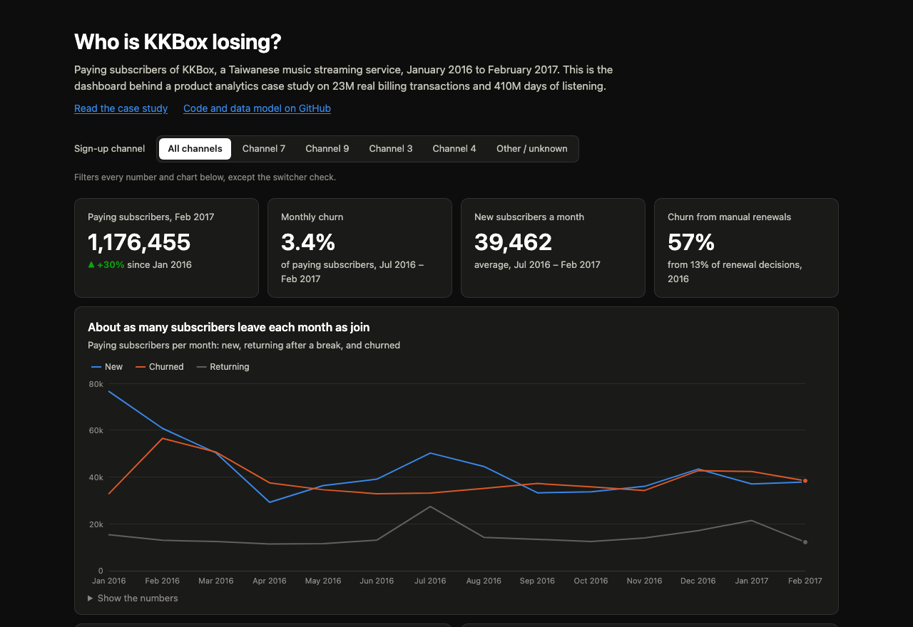

Who is a music streaming service losing, and what would I change?
KKBox grew its paying base by 30% in 14 months, but about 3.3% of subscribers left every month, roughly as many as it signed up. I modelled 23M real billing transactions and 410M days of listening to find where that churn came from.
57%of churn came from manual renewals, 13% of decisions
11%of new subscribers leave at their first renewal
3×less churn after switching to auto-renew
What I'd do: switch auto-renew on by default at checkout where most people pay manually, and test it on churn at the first renewal.
Before any of that, the data had to be fixed: the dataset's own churn label counted 38% of "churners" who were still subscribed.
